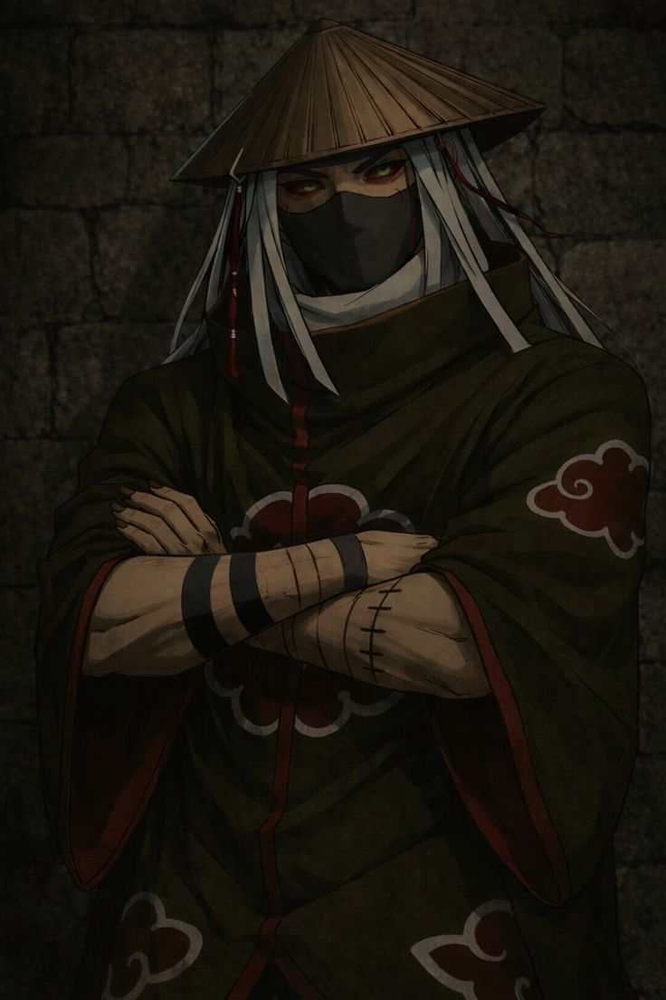

Kakuzu is a powerful and feared member of the Akatsuki in Naruto, known for his greed, immortality-like abilities, and unique combat style. He is originally from the Hidden Waterfall Village and was once tasked with assassinating Hashirama Senju, a mission he failed, which led to his punishment and eventual betrayal of his village.
Kakuzu possesses a forbidden technique that allows him to steal and use the hearts of others, effectively extending his life and giving him multiple lives. Each heart grants him access to a different chakra nature, allowing him to use powerful elemental attacks like fire, wind, lightning, earth, and water. His body is made of dark threads, which he uses to stitch himself back together, attack enemies, and control his extra hearts as separate entities.
Kakuzu from Naruto has a cold, pragmatic, and highly greedy personality. He values money above almost everything else, often judging people and missions based on their bounty rather than any moral or emotional reason. His obsession with wealth makes him extremely business-minded, treating even dangerous missions as financial opportunities.
Kakuzu is ruthless and lacks empathy, showing little hesitation in killing others—including his own partners if they become a nuisance. He is also very patient and calculating, preferring efficiency and logic over unnecessary risk. Unlike more emotional characters, Kakuzu rarely acts out of anger, instead staying focused on practical outcomes.
Kakuzu from Naruto has unique and extremely dangerous abilities that make him very difficult to defeat. His main power comes from a forbidden technique that allows him to steal the hearts of others and integrate them into his body, giving him multiple lives. As long as he has spare hearts, he can survive otherwise fatal attacks. Each heart also grants him a different chakra nature, allowing him to use powerful elemental jutsu such as fire, wind, lightning, earth, and water. He can even release these hearts as separate masked creatures that fight independently, combining their attacks for massive destructive power.
Kakuzu’s body is composed of black thread-like tendrils, which he uses to stitch wounds, reattach limbs, and extend his attacks over long distances. This makes him highly durable and flexible in combat. His Earth Style techniques also give him a hardened body, increasing his defense against physical attacks.
Combined with his battle experience, intelligence, and multiple abilities, Kakuzu is a highly versatile and nearly immortal fighter who can overwhelm opponents with both endurance and raw power.

Kakuzu from Naruto carried out missions primarily driven by profit rather than ideology during his time in the Akatsuki. His main role was capturing targets with high bounties and collecting tailed beasts as part of the Akatsuki’s larger plan, but he was especially focused on missions that brought financial gain. One of his notable missions involved hunting and capturing jinchūriki alongside his partner Hidan, combining Kakuzu’s strategic combat with Hidan’s immortality. He also took on assassination missions, eliminating powerful shinobi to claim their bounties, which aligned with his obsession with money.
Kakuzu’s final mission brings him into conflict with shinobi from the Hidden Leaf, including Naruto Uzumaki and Kakashi Hatake. During this battle, he demonstrates his multiple-heart abilities and overwhelming power, but is ultimately defeated. Overall, Kakuzu’s missions reflect his personality—practical, ruthless, and driven by profit—making him a unique member of the Akatsuki who values money as much as power.
Kakuzu joined the Akatsuki after becoming a rogue ninja and abandoning his original village in Naruto. Originally from the Hidden Waterfall Village, Kakuzu was once a loyal shinobi who was assigned the impossible mission of assassinating Hashirama Senju. After failing, he was harshly punished by his village, which led him to develop deep resentment and eventually betray them. After escaping, Kakuzu stole a forbidden technique that allowed him to take others’ hearts and extend his life, becoming a feared rogue ninja. Over time, he became a bounty hunter, killing powerful targets for money and growing obsessed with wealth.
His skills, immortality-like abilities, and experience made him valuable to the Akatsuki, who recruited him for their missions involving tailed beasts and assassinations. Kakuzu agreed to join not out of loyalty, but because the organization provided opportunities for profit and powerful targets, aligning perfectly with his greedy and pragmatic nature.